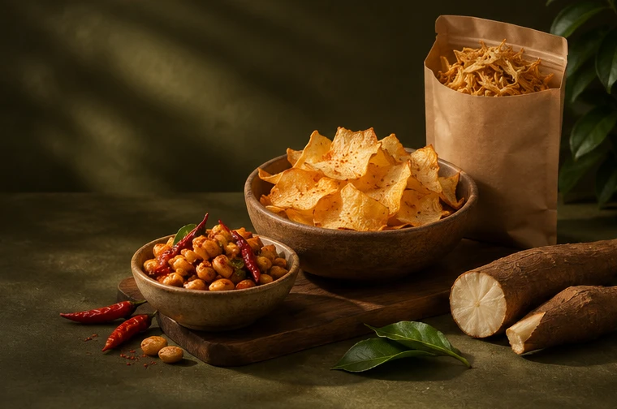
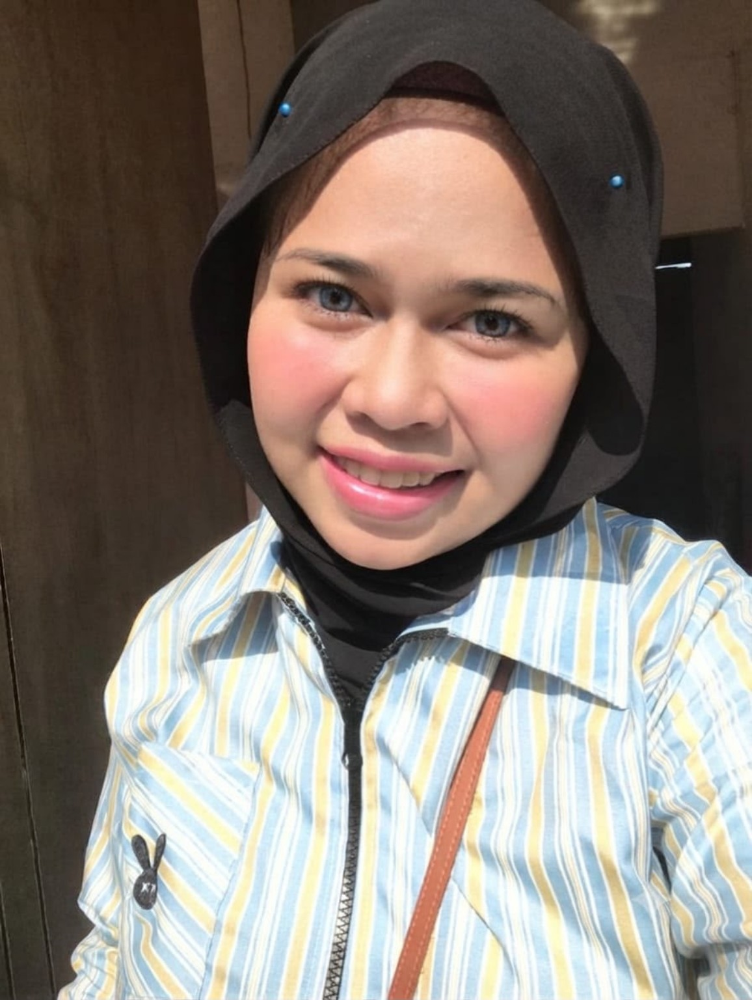

Proyek Kewirausahaan
Teras Lombok
Proyek tugas yang mempraktikkan cara menjual produk secara daring, mulai dari menata katalog camilan hingga membuat invoice dan menyiapkan pesan konfirmasi pembayaran melalui WhatsApp.
Buka proyekKewirausahaan · UIN Mataram
Saya mahasiswa Program Studi Kewirausahaan, Fakultas Ekonomi dan Bisnis Islam, UIN Mataram.
Lihat proyek
Saya senang belajar hal baru, membaca buku, dan bepergian untuk mengenal tempat serta suasana baru.
Saya aktif dalam organisasi kemahasiswaan dan terlibat dalam kegiatan sosial di lingkungan kampus serta masyarakat.

Proyek Kewirausahaan
Proyek tugas yang mempraktikkan cara menjual produk secara daring, mulai dari menata katalog camilan hingga membuat invoice dan menyiapkan pesan konfirmasi pembayaran melalui WhatsApp.
Buka proyek